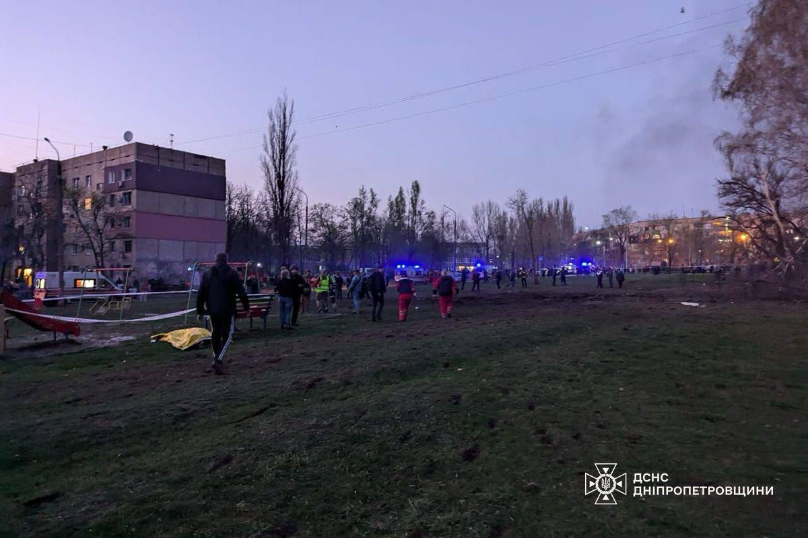
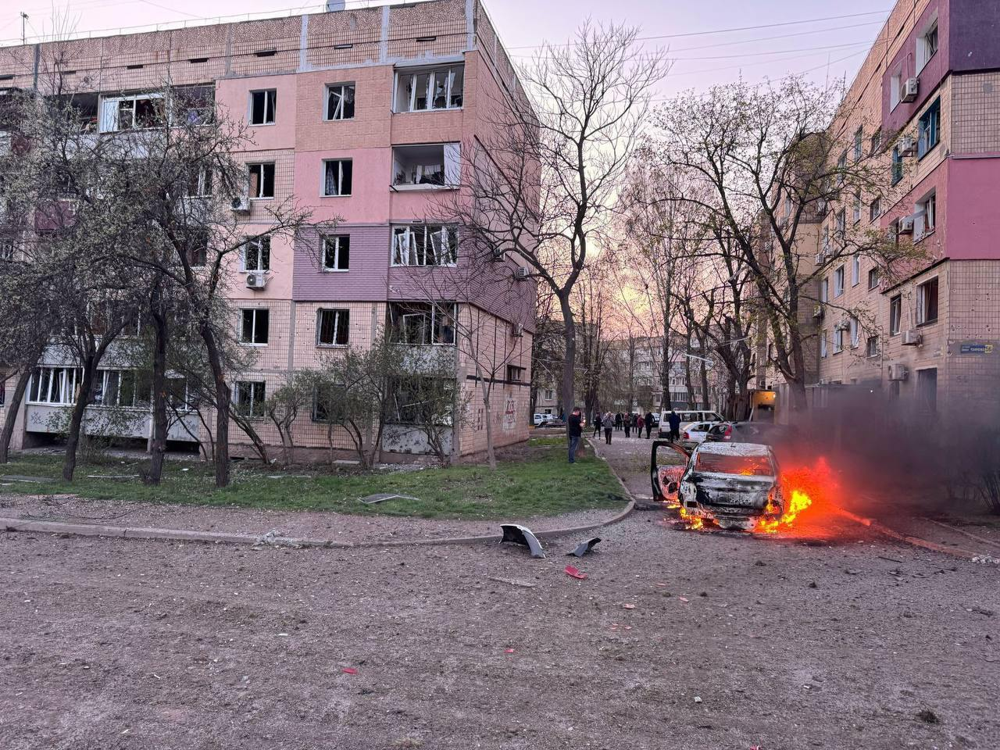
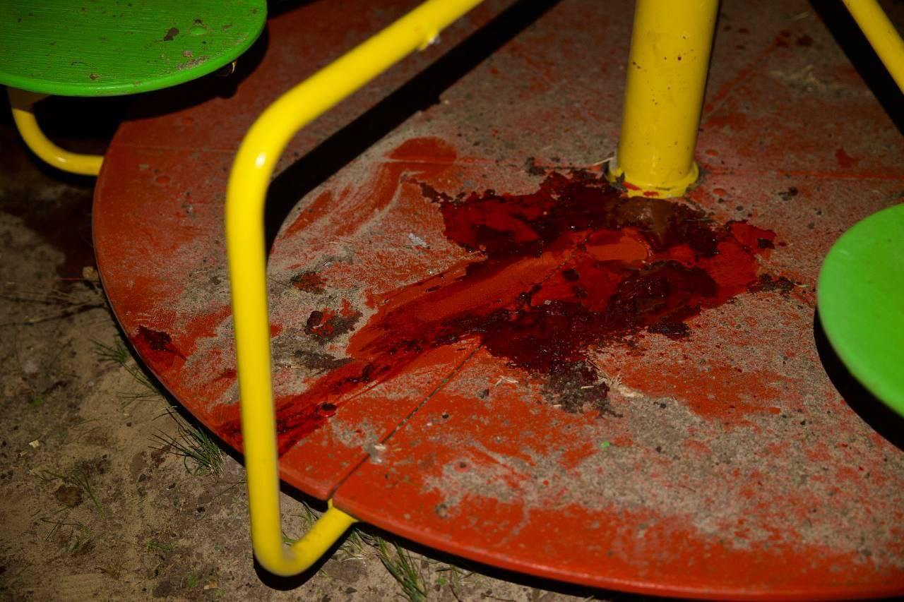

4 квітня близько 18:50 у місті пролунав вибух. рф поцілила балістикою по житловому мікрорайону, де ввечері на вулиці було багато людей – дехто повертався з роботи, а поруч на майданчику гралися діти.
Станом на 20:00 відомо про загибель 14 людей, серед них шестеро дітей. Щонайменше пʼять багатоповерхівок пошкоджені, на вулицях багато скла з вибитих вікон. Горіло декілька автівок та гаражі.
Поруч із місцем атаки розгорнули штаб допомоги постраждалим, де можна отримати будматеріали та написати заяву на матеріальну допомогу. Поліція перекрили доступ до пошкодженого кварталу задля охорони громадського порядку.
Станом на 22:00 вже 16 загиблих та більше 40 поранених. Найменшому постраждалому – три місяці, у хлопчика різані рани. Потрощені 20 багатоповерхівок та більше 30 автівок, вибиті вікна в школах та кафе.
Станом на 8:00 кількість загиблих зросла до 18, серед яких девʼять дітей. Отримала поранення 61 людина. Двох дітей 5 та 8 років у вкрай тяжкому стані терміново ушпиталили до лікарні Дніпра. Криворізькі лікарі боряться за життя 17 людей, які перебувають у важкому стані.
  